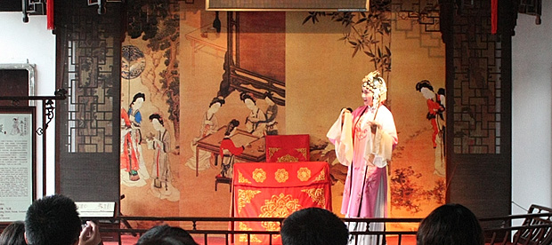

比起苏州，我更喜欢姑苏这个名字。轻轻念这两个字，声音也会变得酥软起来。大概“姑苏”和“舒服”同韵的关系，一念出口，就觉得全身舒坦，好像离江南女子的吴侬软语，离亭台水榭里的评弹小调也不远了。据说“姑”这个字在当地土语里只是个发声词，并没有实际的意义，那就是纯粹为了好听了？
“姑苏”这个名字，虽然比不上“苏州”的大气和浓浓的历史意味，但好像更适合这座阴柔的水乡城市，毕竟对苏州的印象，更多还是它小桥流水，白墙灰瓦下的烟雨朦胧。况且“姑”不只有阴柔的韵味，好像还有点小情趣在里头，就像家乡把荸荠（马蹄）叫做“慈姑儿”，把小孩子玩的过家家叫做“姑姑园儿”，有个“姑”在里头，马上变得有趣许多。 姑苏的韵味是绵长细密的，一如苏州的雨。逛留园的时候，远远就听到女子温婉的弹词，随蜿蜒曲折的小径和高低错落的屋宇忽远忽近，一转身一回头，弹词人就在你面前不过5米处，端坐于厅堂内，犹抱琵琶半遮面，身前是两扇半开半掩的雕花木门。很多游人驻足于此，听她弹唱完一段，才悠悠然离开。弹词人的琵琶并没有像《琵琶行》中那样“嘈嘈切切错杂弹，大珠小珠落玉盘”的急缓层次，更多是幽雅娴静，委婉缠绵的舒缓。“其声如百转春莺，醉心荡魄，曲终人远，犹觉余音绕梁”。弹词的韵味还没有散尽，又听到有人唱昆曲，虽是陋室，仍然坐满了游人，女伶身穿粉红花袍，在屋子一头曼妙歌舞，角落坐着几名乐师，曲声轻柔，缠绵悠远。来到苏州，才突然意识到这里是昆曲的发源地，这个被称为“中国戏曲之母”的剧种，就是从苏州昆山开始，慢慢传到各地，衍生出不同的地方剧种。
这座城市，悠远的除了评弹昆曲小调，还有“姑苏城外寒山寺，夜半钟声到客船”的钟声。寒山寺因这首诗扬名，而诗中最重要的景致便是钟声了。寒山寺的钟是我见过最大的，有三层楼高，108吨重。在梵音阁的顶层举目远眺，这座八角亭的四扇窗，每扇都是不同的景致，有一扇窗外还有不远处僧人悠悠的诵经声。现今的这口钟早已不是当年张继听到的那个，当年的钟传说是流到了日本，但也一直无从考证。人已不是当年的人，钟也不是当年的钟，但钟声还在，依旧厚重而悠远。倚在窗前，听脚下钟声响起，整座钟楼都在微微颤动，整个人却安静下来，恍惚间一缕禅意升起，内心也变得清净明亮起来。